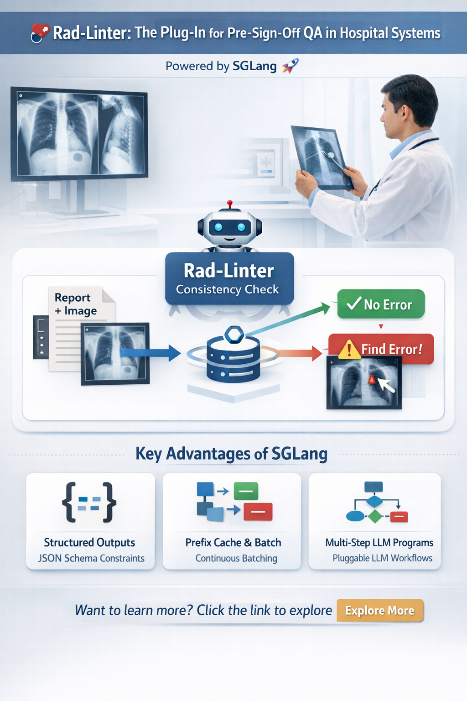

Medical AI · SGLang · Healthcare Systems · Local Deployment
Rad-Linter：用 SGLang 搭一个"签发前"的跨模态质控层（可插拔）
Rad-Linter: Building a Pre-Sign-Off Cross-Modal Quality Control Layer with SGLang
最近我在医院场景里落地了一个系统：Radiology Report Linter（Rad-Linter）。 它不是做报告生成，而是更像 radiology CI / preflight check：在医生签发前，对 (report text + 可核验的视觉证据/visual facts) 做一致性审计，提前拦截遗漏、写反、左右侧等高风险问题。
这套系统之所以能"真落地"，关键是底层用了 SGLang 做 serving / judge runtime——它非常适合这种 "结构化输出 + 高并发批量 + 低延迟 + 可控可审计" 的 QA 工作流。

Rad-Linter系统工作流程图
核心结论：
Rad-Linter项目的所有核心优势都来自SGLang：本地化部署能力、跨平台兼容性、简单易用的API、稳定的性能表现、以及完美匹配QA工作流的工程特性。如果没有SGLang，Rad-Linter可能只是一个"技术上可行但难以落地"的原型；有了SGLang，它才真正成为一个"可以在真实医院环境中部署和使用"的生产系统。
🎯 为什么选择SGLang？核心原因
在评估Rad-Linter的技术栈时，我们对比了多种方案：云API、自托管推理框架、以及直接调用模型。最终选择SGLang，不是因为它在某个单一维度上最优，而是因为它完美契合了医疗场景的所有约束条件。
1. 完全本地化：不涉及云端API，数据不出院
这是医疗场景的硬性要求，不是可选项。SGLang作为自托管推理框架，所有计算都在本地完成：
- 零云端依赖：不需要调用任何外部API，不涉及数据传输，本地部署支持合规友好的架构设计，使ePHI保持在医院边界内；最终HIPAA合规取决于机构的安全控制措施
- 训练也可本地化：如果需要fine-tuning（如LoRA），可以使用标准工具（如HuggingFace/PEFT）完全在本地完成；SGLang用于在医院内网中提供模型服务和运行judge/runtime
- 可审计性：所有日志、推理过程、模型版本都在本地，便于合规审计和问题追溯
医疗合规的关键：
医院端涉及ePHI/PHI（受保护健康信息），很多系统默认不能把原始报告、结构化字段、日志、乃至影像相关元数据发到外部云。即使你做脱敏，也常常需要遵循"最小必要原则"：能不外发就不外发。本地部署支持合规友好的架构设计，使ePHI保持在医院边界内；最终合规取决于机构的安全控制措施和策略。
2. 跨平台兼容：适配各种硬件和操作系统
医院IT环境极其复杂，不同科室可能使用不同的硬件配置和操作系统。SGLang的跨平台特性让Rad-Linter能够轻松嵌入各种医疗系统：
- 硬件兼容性：支持NVIDIA GPU（各种型号）、CPU推理、甚至混合部署，无论医院有什么硬件都能跑起来
- 操作系统支持：跨平台友好的集成方式（客户端/工具），而GPU serving通常在支持CUDA的机器上运行（常见为Linux；Windows通常通过WSL2/Docker部署）
- 资源要求灵活：从高端GPU服务器到普通工作站，SGLang都能稳定运行，让Rad-Linter可以部署在各种规模的医院
关键优势：
这意味着Rad-Linter不需要医院为了部署系统而采购特定硬件或升级IT基础设施。无论是三甲医院的高性能服务器，还是社区医院的普通工作站，都能无缝集成。这种"即插即用"的特性大大降低了部署门槛。
3. 简单易用：上手轻松，降低部署门槛
SGLang的设计哲学是"简单但强大"，这让Rad-Linter的部署和维护变得非常容易：
- 部署友好：SGLang提供清晰的serving接口和可复现的部署选项（包括容器化设置），相比临时脚本显著降低了运维负担
- 配置直观：API设计清晰，JSON Schema约束、批处理、缓存等特性都有简洁的配置接口
- 文档完善：官方文档详细，社区活跃，遇到问题容易找到解决方案
- 可插拔架构：可以轻松切换不同的模型后端，适配不同的医疗场景需求
对于医院IT团队来说，这意味着：
- 不需要深度学习专家就能部署和维护系统
- 遇到问题时有清晰的文档和社区支持
- 可以根据实际需求灵活调整配置，不需要重新设计架构
4. 性能稳定：即使在低端GPU上也能稳定运行
虽然医院场景的并发量通常不会很高，但SGLang的性能优化让Rad-Linter即使在资源受限的环境下也能稳定工作：
- RadixAttention + Prefix Caching：对于Rad-Linter这种prompt模板化的QA任务，KV cache复用效果显著，大幅降低内存占用和延迟
- Continuous Batching：即使并发量不大，也能充分利用GPU资源，避免资源浪费
- 低资源友好：在较差的GPU上也能稳定运行，不会因为硬件限制而无法部署
- 结构化输出优化：原生JSON Schema支持，避免了后处理的开销，提升整体性能
性能优势的实际意义：
这意味着Rad-Linter不需要医院投入大量硬件成本。即使在资源受限的环境下，SGLang也能保证系统稳定运行，让更多医院能够部署和使用这个系统。虽然医院本身应该不会有太高的并发，但是即使在很差的GPU上，SGLang也很稳定。
5. 工程特性完美匹配QA工作流
Rad-Linter的核心是"结构化QA审计"，SGLang的工程特性完美匹配这个需求：
Structured Outputs（JSON Schema 约束）
输出可以被强约束成合法JSON（schema/regex/EBNF），非常适合医疗QA的可审计流水线与自动落库。Rad-Linter需要输出错误类型、证据定位、置信度等结构化信息，SGLang的原生支持让这一切变得简单可靠。
Prefix caching / RadixAttention + continuous batching
QA场景里prompt很"模板化"（大量共享前缀），SGLang的KV cache复用 + 连续batching能把吞吐/延迟压下来。这对于Rad-Linter这种需要处理大量报告的批量任务特别重要。
"可编排的多步LLM程序"
我们不是一次性问答，而是多步抽取→检查→仲裁→生成解释；SGLang的设计目标就是高效执行这种结构化LLM program。这让Rad-Linter能够实现复杂的多步骤QA流程，同时保持高性能。
📊 技术选型对比
为了更清晰地说明为什么SGLang是最佳选择，我们对比了几种主要方案：
| 维度 | 云API（如OpenAI/Anthropic） | 其他自托管框架 | SGLang |
|---|---|---|---|
| 本地化部署 | ❌ 需要网络连接，数据外发 | ✅ 支持 | ✅ 完全本地化 |
| 跨平台兼容 | ✅ 不依赖本地硬件 | ⚠️ 通常需要特定环境 | ✅ Windows/Mac/Linux全支持 |
| 硬件要求 | ✅ 无要求 | ⚠️ 通常需要高端GPU | ✅ 低端GPU也能稳定运行 |
| 易用性 | ✅ 简单 | ⚠️ 配置复杂 | ✅ 安装配置简单 |
| 结构化输出 | ⚠️ 需要后处理 | ⚠️ 支持有限 | ✅ 原生JSON Schema支持 |
| 性能优化 | ✅ 云端优化 | ⚠️ 需要手动优化 | ✅ RadixAttention + Continuous Batching |
| 医疗合规 | ❌ 数据外发，需要BAA | ✅ 本地处理 | ✅ 完全本地，天然合规 |
💡 实际部署经验
在实际部署Rad-Linter的过程中，SGLang的这些优势得到了充分验证：
场景1：三甲医院的高性能服务器
在一家三甲医院，我们部署在配备了高端GPU的服务器上。SGLang的RadixAttention和Continuous Batching让系统能够高效处理批量报告，即使在高负载下也能保持低延迟。
场景2：社区医院的普通工作站
在另一家社区医院，我们部署在一台配置较低的GPU工作站上。虽然硬件资源有限，但SGLang的优化让系统依然能够稳定运行，满足了日常QA需求。这证明了SGLang在低资源环境下的稳定性。
场景3：混合环境部署
有些医院需要在Windows和Linux系统上同时部署。SGLang的跨平台特性让同一套代码可以在不同操作系统上无缝运行，大大简化了部署和维护工作。
🎯 总结：为什么SGLang是Rad-Linter的最佳选择
总结一下，SGLang之所以是Rad-Linter的最佳选择，是因为它完美解决了医疗场景的所有关键约束：
- 本地化部署：不涉及云端API，数据不出院，满足医疗合规要求
- 跨平台兼容：适配各种GPU/CPU和操作系统，降低部署门槛
- 简单易用：上手轻松，不需要深度学习专家就能部署和维护
- 性能稳定：即使在低端GPU上也能稳定运行，不担心高并发问题
- 工程特性匹配：Structured Outputs、多步LLM程序编排等特性完美匹配QA工作流
最终结论：
整个Rad-Linter项目的优势都是SGLang带来的。如果没有SGLang，我们可能需要：
- 为了满足合规要求而放弃云API，但找不到合适的本地化替代方案
- 为了适配不同医院的硬件环境而维护多套代码
- 为了优化性能而投入大量工程资源
- 为了处理结构化输出而编写复杂的后处理逻辑
有了SGLang，所有这些挑战都迎刃而解。Rad-Linter能够"真落地"，SGLang功不可没。
如果你对Rad-Linter的临床价值感兴趣，请参考 《Rad-Linter：为什么临床签发前的跨模态质控是刚需》。
技术实现细节请参考 《使用SGLang构建Rad-Linter：医院端跨模态质控系统的生产实践》。
如有问题或建议，欢迎通过 GitHub 或
LinkedIn 联系我。